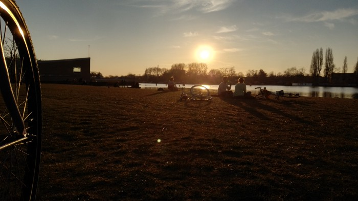

On Biking

By the banks of the Amstel River, March 2020
“There’s a secret that real writers know that wannabe
writers don’t, and the secret is this: It’s not the
writing part that’s hard. What’s hard is sitting down to write.”
I am a firm believer of the above quote. As a master procrastinator, it resonates deeply within
me. The fact that I am also a somewhat decent and aspiring writer makes it hit home that much
harder. The more I don’t write, the harder it is to put that first ink to paper.
But this isn’t just about my failed attempts to summon the motivation to do justice to my wasted
potential — I feel the above quote applies to so many different aspects of my life.
One that sticks out to me is biking.
As someone who has spent the better part of the last 4 years in Amsterdam — the Babylon of bikes
— it would surprise you to know that I didn’t learn how to ride a bike until March 2020. Yes, I
learned how to bike at the tender age of 23. And all it took was the looming threat of the
destruction of civilization by virtue of a plague and a prolonged self-loathing at my own
condition. That is how badly I procrastinate things — or how afraid I am on occasion to start
doing them.
Even if I wasn’t in a city with over 400 kilometers in bike lanes, surely biking is something I
should have learned a long long time ago right? Apparently not — I just never did. And somewhere
along the line it became easier to not learn, until it wasn’t.
Biking itself wasn’t even that difficult when I started, it took me about a day to get the hang
of it.
For me, the hardest part was always just getting on the bike.
I recall constantly explaining myself to strangers and friends when they’d ask me to join them
for a quick bike ride to the city; “Oh no thanks, I think I’ll walk” or “I’ll meet you there” or
any number of excuses before making my way to the nearest public transportation — or just
staying at home! It was embarrassing, but what was even more embarrassing was the thought of
confronting the fact that I had not learned how to bloody cycle.
Needless to say, I missed out on a lot in my first few years in this city — for when I finally
did muster up the courage to sit on a bicycle — I was taken aback at how simple of a task it was
and how much it transformed my experience of Amsterdam. All the potential nights out I had
missed with friends or solo sojourns by myself glared at me through the din in my mind.
Regret.
Thankfully, that didn’t last. I still do regret not taking the initiative to overcome my
sloth/fear of failure/shame/whatever you want to call it — sooner, but I don’t let the regret
cripple me into inaction any more.
Just fucking get on that bike you piece of shit, my mind screamed at me.
After falling down multiple times during my first attempts at cycling, I did something I seldom
do. I unleashed my fury unto my vehicle and channeled all my anger at the state of my being into
action.
I started pedaling as fast as I could, not caring if I crashed into a poll or a tree - or a car.
Face down and pushing through.
And when I opened my eyes…
Lo and behold, he bikes.
I should never have let it come to that point but I did. I let it get to a point where my rage
and disdain at my condition were the driving factors behind my efforts to change it.
At least I learned a valuable lesson about myself and life.
Yet still, even though I have learned how to, the hardest part about biking is getting on the
bike, the hardest part about writing is sitting down to write, the hardest part about doing most
things for me is still — just getting started. Finding that will to overcome your own ineptitude
and that drowning voice at the back of your head that says you can’t do it — or rather you don’t
need to. It’s all about overcoming that voice.
But now I know what the hard part is.
Ride or die.
Arsalan Ali Aga
May 28 2021 3:22 AM